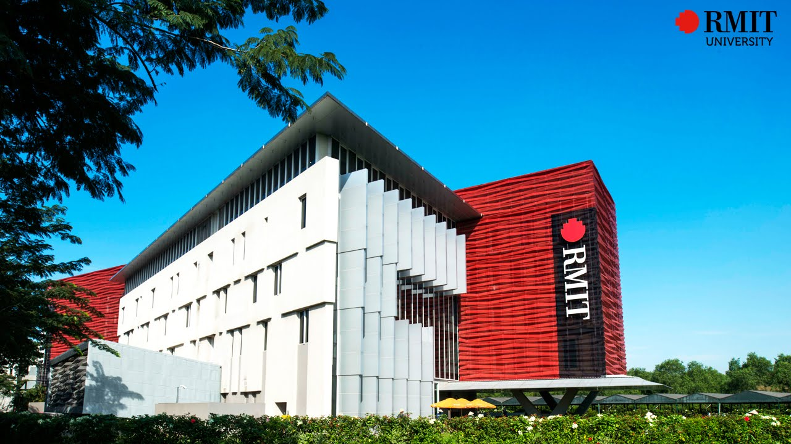

2. INTEREST IN IT:
1. What is my interest in IT?
The most ambitious feature that I find in IT is the method of working. There are many ways that suit my working style. I love solving the problem by logic and making many things by my mind. For example, I could create software for a hospital or a company, and I also could build a robot if I learn more about the robotic process. And all of them can be developed by the computer, which I really love to work with, compared with other areas like business or communication.
2. When did my interest in IT start?
I found myself the desire of learning IT when I started to be in grade 11. It was the first time I was taught a new programming language that could be built by the algorithm: Pascal. In class, I concentrated on the lesson clearly, and I also researched more about other languages such as HTML, JavaScript, and Python. Honestly, I don’t commend myself, but at that time, I always got high marks for the assignment. In addition, I looked for many jobs that are relevant to the IT area. That’s why I am joining in Information Technology course now.

3. Was there a particular event or person that sparked my interest?
- Definitely my teacher is the first person that inspired me to join in this course. She always took care of her students very well. And her teaching was not too theoretical or tedious. Instead, she focused on practicing the theory right on the computer, so that not only me, but all students could understand deeply the modules or the logic. By her enthusiasm, I could find the desire of learning IT.
- Additionally, I watch a youtube channel named “CS Dojo”. He gives many experiences and knowledge from working on a huge company: Google. He also has lots of tutorials teaching coding with Python, JavaScript, …

4. Why did I choose to RMIT University come to?
There are 3 dominances why I chose RMIT University to study:
• The study environment: I want to learn in a professional and effective university because it is quite essential to have the right path, so that I could success in my career. And RMIT University can supply that environment, which has many good and professional teachers and always forces students to communicate by English.
• The facilities: to be honest, I can’t find another university that equips with a huge of modern equipment and computers like RMIT University. The library has a variety of books and documents that can help me with my research and study. In terms of IT, supplies learners a lot of equipment relevant to the future career like chips, up-to-date labs, arduino, …
• The opportunity: affiliates with many huge brands that give many internships and jobs for students. These are a huge dominance compared with other universities, so I could gain more experiences while learning at school.

5. During my studies, I expect to learn:
- Basis knowledge about IT area: security, networking, cloud computing, …
- Practicing with a group: before that, I’ve never had any experience of team-working. So I hope during the studies, I could gain more skills about that like interaction, leadership, and learn many experiences from my partners as well.
- Learning advanced solutions for working in the IT area.
- Learning more things that are relevant to what the companies nowadays need.